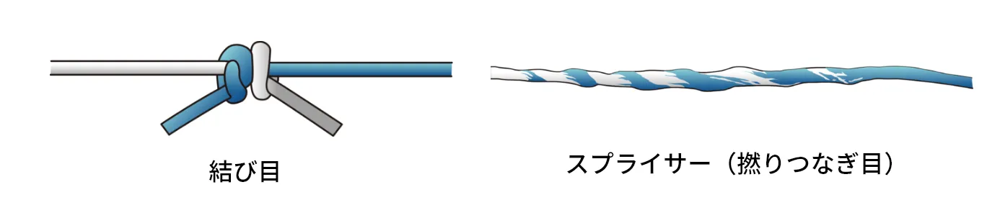
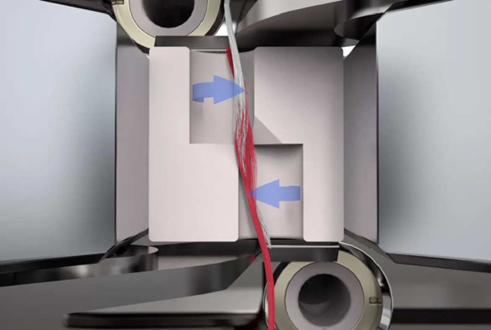
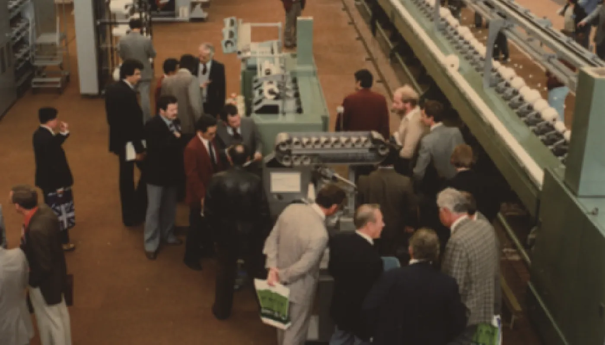
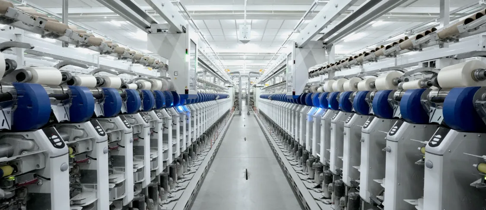

革新の分岐点 Story vol.1

今では信じられないことですが、1970年代まで、
綿などの天然繊維の糸には「結び目」があることが常識でした。
当時の常識を覆し、結び目のない糸の実現で世界の糸づくりに
革新をもたらしたのが、ムラテックの「マッハスプライサー」です。
糸の結び目が織機や編機を
停める原因に
衣服などに使用される布の工業生産において、自動織機や編機で効率的に連続生産するためには一定品質の「長い糸」が必要ですが、昔はこの長い糸をつくることは簡単ではありませんでした。
紡績の最終工程で、糸を長くつなぎ合わせていくのが自動ワインダーという機械です。 当時はその糸つなぎのために「ノッター」と呼ばれる、糸同士を結んでつなぐ装置が搭載されていましたが、その結び目が後工程で問題になっていました。
1970 年代までは織機や編機の中で結び目が引っかかり、機械を停止させてしまう問題も日常的に発生。さらに、完成した布にも結び目が残り、手作業で目立たないように処理する必要があったため、生産効率や見た目の美しさが損なわれていました。 こうした課題を一新し、繊維業界に大きな革新をもたらしたのが、自動ワインダーに搭載された「マッハスプライサー」です。

はじまりはドイツから
持ち帰ったある装置
そのヒントになったのが、1977 年に当時社長（現会長）の村田純一がドイツの技術提携先から持ち帰った小さな装置でした。この装置は、化学原料からつくられる合成繊維の糸端を圧縮空気で絡めてつなぐものでしたが、当社の自動ワインダーで加工可能な綿糸やウール糸などの紡績糸は短く細かい繊維が撚り合わさってできているため、空気で吹き飛ばされてしまい最初はまったく役立ちそうにありませんでした。
しかし、当時の技術者たちは「この装置を紡績糸に応用できれば、糸から結び目は消え、世界の常識がひっくり返る」と信じ、その揺るがぬ信念を胸に試作と実験に没頭していきました。
つなぐために「ほぐす」
発想の転換
開発を始めてから 3 か月。ウール糸のつなぎ目は実用レベルに達しましたが、繊維がより短い綿糸はうまくいかず、見た目も強度も実用レベルには程遠い状態でした。なかなか成功の糸口を掴めないまま行き詰まっていたある日、別の実験で、強い空気を当てすぎると糸がほぐれてしまうトラブルに遭遇。紡績糸は短い繊維を一定方向に撚（よ）り合わせることで形成されているので、強い空気の力で撚りがないただの繊維の集まりに戻り、糸としては使えなくなってしまいます。しかしスプライサー技術者は、それを見た瞬間にひらめきました。
「糸の端を最初からほぐしておいて、その部分を重ねて撚り合わせればうまくいくかもしれない」。
さっそく実験に取り掛かり、圧縮空気で糸端をほぐした綿糸同士をもう一度撚り合わせてみると驚くほどきれいな糸が完成。「結び目」がなく、高品質な一本の糸がついに誕生したのです。「絡める」から「ほぐして撚る」への見事な発想の転換でした。

糸をつなぐ常識が変わった日
「マッハスプライサー」と命名した試作機のスプライサーを搭載した自動ワインダーを、1979年10月にドイツ・ハノーバーで開催された欧州国際繊維機械見本市（ITMA）へ出展。会期前ギリギリまで改良を重ねたものの100%成功の自信はなく、メインの出展品に隠れるように置いていました。
ところが、会期が始まると競合メーカーの技術者が「マッハスプライサー」の実演に次々と立ち止まり、中には結び目がないことに驚いて、持参した糸を勝手に装置にセットして試す人まで現れました。やがて展示ブースの周りが見学者で溢れ返ったため、急遽、見学の代わりにつないだ糸のサンプルを配り始めるとさらに人が集まり、ブースはパンク状態に。「マッハスプライサー」が世界の常識を変え、世界の紡績を変える第一歩を踏み出した瞬間でした。

特許技術を共有して
業界のスタンダードへ
その後、ムラテックはこの技術を囲い込むのではなく、業界のスタンダードになればと考え、自動ワインダーのライバルメーカーに対しても特許の使用を許諾。その結果、世界中のどの自動ワインダーにも「マッハスプライサー」の基本技術が使われるようになり、糸づくりの生産効率と品質は格段に向上しました。

世界の糸づくりをリードし
社会と暮らしを変えてゆく
ムラテックの繊維機械事業